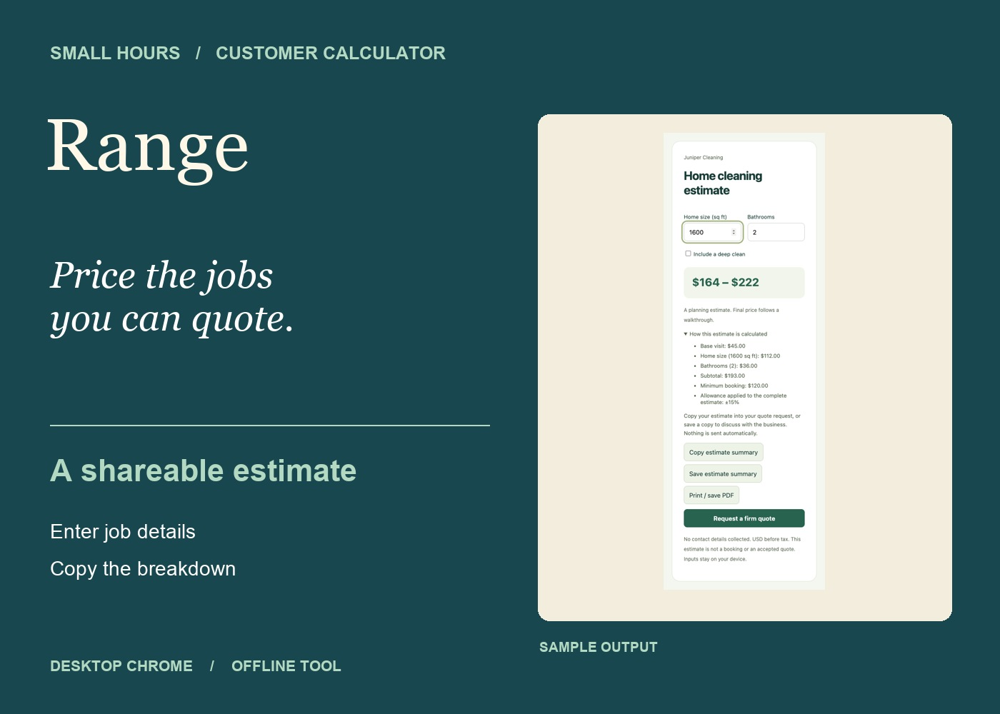
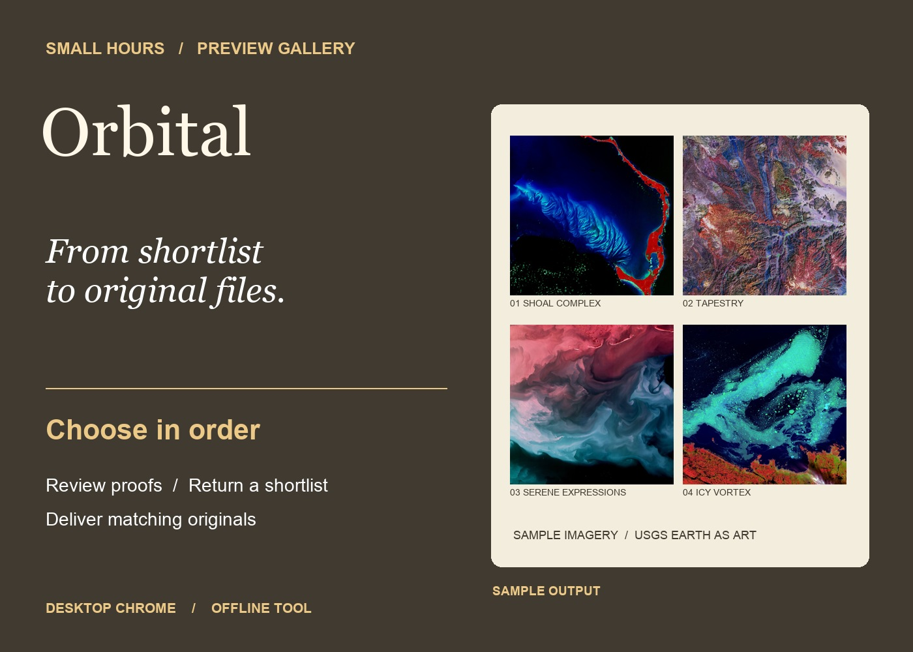

Explore two interactive demos and four finished examples from our offline tools. Each example links to its product listing on Payhip.
 Benchquote
BenchquoteA $1,375 job has a $300 receipt. The revised scope totals $1,625. See how the proposed $1,325 balance differs from the $350 still needed toward the proposed deposit.
 Fieldnote
FieldnoteOpen the sample handoff to see the photo report, outstanding actions and next steps the recipient gets.
 Turnkey
TurnkeyReview assigned tasks, a known repair and spaces for final counts. The cleaner can use the sheet before the owner records a completed handoff.
 Framepack
FramepackTwo source photos became six web, proof and social files. Open the manifest to compare the recorded byte counts with the delivered files.

RangeEnter 2,000 sq ft and two bathrooms, then select deep cleaning. These sample rates return $235–$317. Change the inputs and save your breakdown.

OrbitalPick two images, review their order and export your shortlist. This gallery uses free USGS Earth As Art imagery.